Here are two small sample functions, named "Trail" and "DMB".
A function may be defined entirely on one line (as shown with the "Trail" function), or on multiple lines (as shown with the "DMB" function).
Although functions can be created within the A+ environment, they cannot be edited or saved from within the A+ environment; it is therefore most common to enter functions from within the Emacs or XEmacs editor.
You may type the definition in on the same line as the header,
or you may press the Enter key and put the code that defines the function
on successive lines under the heading.
The definition is ended when you enter a closing brace ("}")
which is paired with the opening brace.
In general, spaces may be inserted between names and symbols
in a function in order to aid visual clarity.
These spaces have no effect on the operation of the code.
If semicolons are not used properly,
a common symptom is that the function might execute with no error reports,
but may not return a result to you.
It is very desirable to include comments with your code.
Many people commonly start a function definition
with one or more comment lines
which explain the overall purpose of this particular unit of code
and describe its arguments and result.
Comments may appear anywhere within the body of a function.
Everything to the right of a comment symbol,
up to the end of the line,
is considered to be part of the comment.
Therefore, whether a comment line ends with a semicolon or not is immaterial;
if a semicolon character is present at the end of a comment line,
it is just part of the comment.
You cannot put an ending brace on a comment line,
because the brace will just be considered to be part of the comment.
 An opening brace ("{") begins the definition of a multi-line function.
Braces are optional for a function that is defined entirely on one line.
An opening brace ("{") begins the definition of a multi-line function.
Braces are optional for a function that is defined entirely on one line.
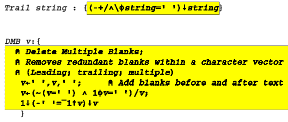
Everything between the outermost braces
constitutes the "body" of the function.
(The braces are optional for a function defined on one line.)
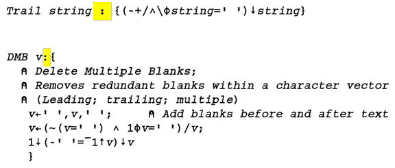
A colon separates the header line from the body of the function.
Spaces may optionally be placed before and after the colon,
but are not required.
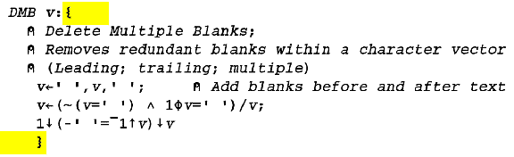
By convention (only),
it is common to have the heading and opening brace on a line by itself,
and the closing brace also on a separate line.
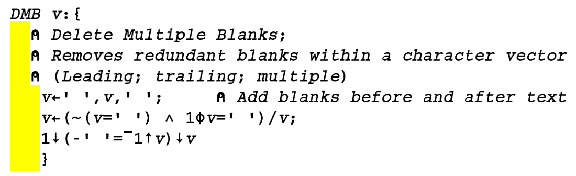
The indentation of the lines must be entered manually;
lines are not automatically indented.
The system, however, will retain the indentation that you provide.
It may be desirable to use indentation for clarity.
How much each line is indented is up to you.
You can enhance the readability of your functions
through the judicious use of indentation,
and in particular, by being consistent with your indentation style.
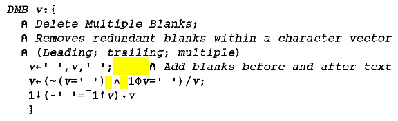
Extra blanks may optionally be used between A+ symbols.
This may be desirable for clarity
(although it has no effect at all on the execution of the code).
Blanks may help to visually separate blocks of code within a line.
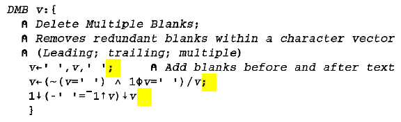
A semicolon must be used at the end of each line -
except for the last line of code in the function:
the last line must not end with a semicolon.
(Comment lines do not need semicolons; see below.)
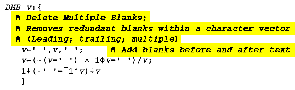
Any line which begins with a lamp symbol ("ã")
is a comment line.
Nothing else on a comment line is evaluated or executed
(...a lamp is used for illumination only...).
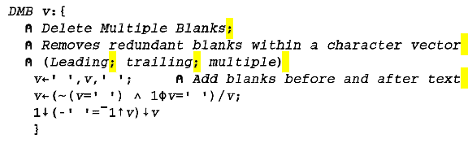
If there is a semicolon character within the comment,
it is simply part of the comment.
A semicolon to the right of a comment symbol does not end the comment;
a comment may only be ended by the end of the line
(i.e., by pressing the Enter key).
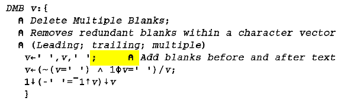
A comment which appears to the right of a line of code
must follow that line's ending semicolon.
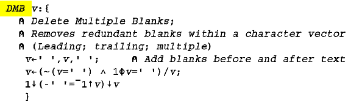
The header of a function does not indicate
an assignment of a result (as it does in other APL implementations),
because all A+ functions return results.
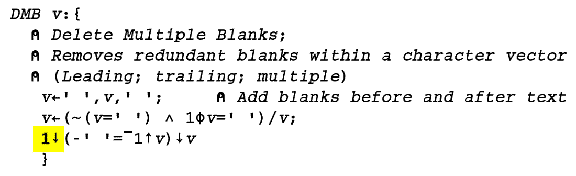
An assignment of a result variable is also not needed
within the body of a function.
The result of the function is simply the result of the last operation,
whether that was an assignment to a variable (of any arbitrary name)
or the result of an operation with no assignment.